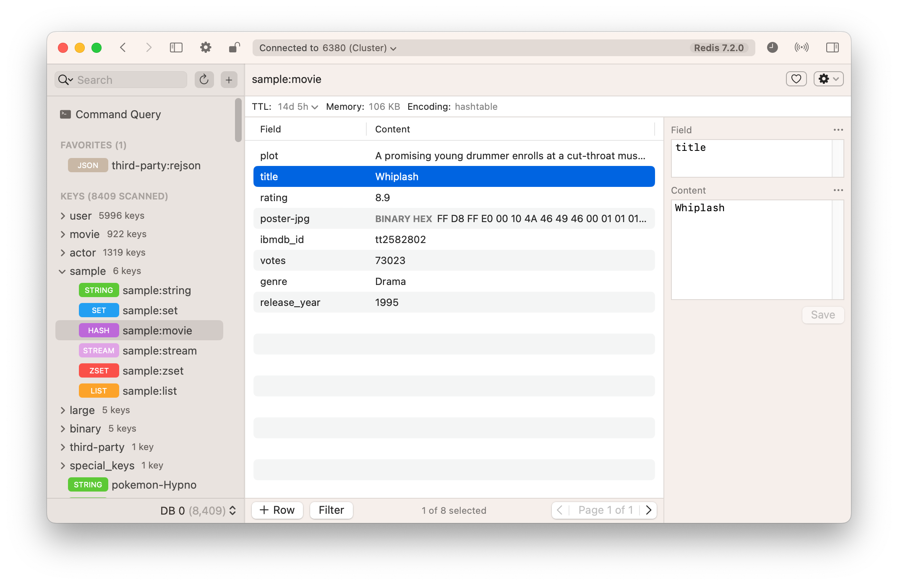
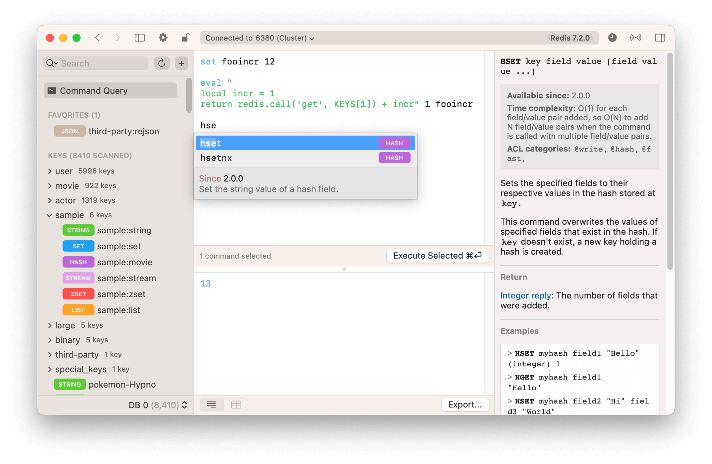

Best Redis GUI for macOS: Medis 2
Redis, an open-source, in-memory data structure store, has become an essential tool for developers and businesses alike. With its ability to handle complex data types and its exceptional performance, Redis has gained a strong foothold in the world of database management.
However, working with Redis can sometimes be challenging, especially when dealing with large databases or complex operations. That's where Medis 2 comes in.
Redis Made Easy with Medis 2
Medis 2 is a powerful Redis GUI specifically designed for macOS users. It offers a seamless and intuitive user experience, making it the go-to choice for managing Redis databases. With its robust features and visually appealing interface, Medis 2 sets itself apart as the best Redis GUI for macOS.
A Complete Solution for Redis Management
Medis 2 goes beyond the basic functionalities of a typical Redis client. It offers a comprehensive set of features that cater to the specific needs of Redis users. From managing various data types to handling millions of keys and fields effortlessly, Medis 2 excels in providing a complete solution for Redis management.
Visual Appeal and User-Friendly Interface
One of the standout features of Medis 2 is its visually appealing user interface. The clean and intuitive design makes it easy for users to navigate and manage their Redis databases. The customizable tree view allows users to categorize keys according to their preferences, ensuring a personalized and organized database management experience.
Query View for Maximum Clarity and Efficiency
Medis 2 includes a powerful query view that allows users to execute arbitrary commands. The keyword highlighting and autocompleter feature enhance code readability and efficiency, enabling users to work with Redis effortlessly. Whether you're a seasoned Redis expert or a beginner, Medis 2 simplifies the querying process and ensures maximum clarity in your commands.
Ensuring Data Security and Preventing Accidents
When dealing with production databases, data security is of utmost importance. Medis 2 has integrated features that prioritize data protection. In alert mode, every writable command sent to servers requires explicit approval, preventing accidental destruction of production databases. This provides peace of mind for developers and ensures the safety of critical data.
Seamless Compatibility and Flexible Connectivity
Medis 2 recognizes various data formats automatically, including MessagePack, which helps reduce memory usage. Moreover, it offers seamless connectivity to remote servers through SSH tunneling and provides excellent support for SSL connections. With Medis 2, you can manage your Redis databases securely, regardless of your network setup.
Embracing the Dark Side: Dark Mode Support
For those who prefer working in a darker environment, Medis 2 has got you covered. It offers first-class support for dark mode, ensuring a visually pleasing experience and reducing eye strain during those late-night coding sessions.
First-Class Support for Redis Cluster Mode
Redis Cluster Mode is an essential feature for high availability and scalability. Medis 2 provides first-class support for Redis Cluster Mode, allowing users to effortlessly manage their distributed Redis databases. With Medis 2, you can easily monitor and interact with Redis clusters, making it an indispensable tool for scaling your Redis infrastructure.
Frequently Asked Questions
How can Medis 2 enhance my Redis management experience?
Medis 2 offers a visually appealing and user-friendly interface, customizable tree view, powerful query view, and robust security features. These features combine to provide a seamless Redis management experience and increase productivity.
Can I use Medis 2 with my production database?
Yes, Medis 2 is specifically designed to handle databases with millions of keys and fields without any blocking issues. It operates seamlessly with production databases, ensuring a smooth and efficient management process.
Does Medis 2 prioritize data security?
Absolutely! Medis 2 has a built-in alert mode that requires explicit approval for writable commands sent to servers. This prevents accidental destruction of production databases and ensures the safety of your critical data.
Can I connect to remote servers with Medis 2?
Yes, Medis 2 allows you to connect to remote servers using an SSH tunnel, ensuring secure and encrypted data transmission. It also provides excellent support for SSL connections, further enhancing the overall security of your Redis management.
Is Medis 2 compatible with Redis Cluster Mode?
Yes, Medis 2 offers first-class support for Redis Cluster Mode. You can effortlessly manage your distributed Redis databases, monitor cluster health, and perform various operations with ease.
In Conclusion
Redis management doesn't have to be complex or tedious. With Medis 2, you can elevate your Redis experience on macOS to new heights. Its visually appealing interface, powerful features, and seamless compatibility make it the ultimate Redis GUI for macOS. Whether you're a developer, a database administrator, or a Redis enthusiast, Medis 2 is the perfect tool to streamline your Redis management workflow.
So what are you waiting for? Download Medis 2 now and take your Redis management to the next level!